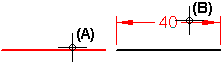
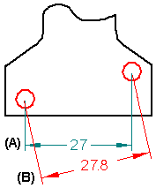

Example: Dimension the length of a line
-
Click the Smart Dimension command
 .
. -
Click a line (A).
Smart Dimension dynamically displays a linear dimension.
-
Position the dimension, and then click to place it (B).

Before you click to place the dimension, and depending upon the number of elements selected, you can use the following keys to affect the dimension that is created:
|
Keyboard options |
Result |
|
A |
Changes between a linear dimension and an angular dimension. |
|
B |
For PMI, changes the dimension orientation back to the previous dimension plane in sequence. |
|
D |
Changes between a radial dimension and a diameter dimension. |
|
N |
For PMI, changes the dimension orientation to the next dimension plane in sequence. |
|
Shift |
Alternates between:
 |
|
Q |
Turns automatic locate off and on so you can select a different element to dimension to. |
How do I
Example: Dimension the diameter of a circleDimension similarly sized holes
Example: Dimension a curved slot
Place concentric diameter dimensions
Place a feature callout dimension
Place a 3D dimension on a pictorial drawing view
Define smart feature properties in the Dimension style
Look up more details
Smart Dimension commandSmart Dimension command bar